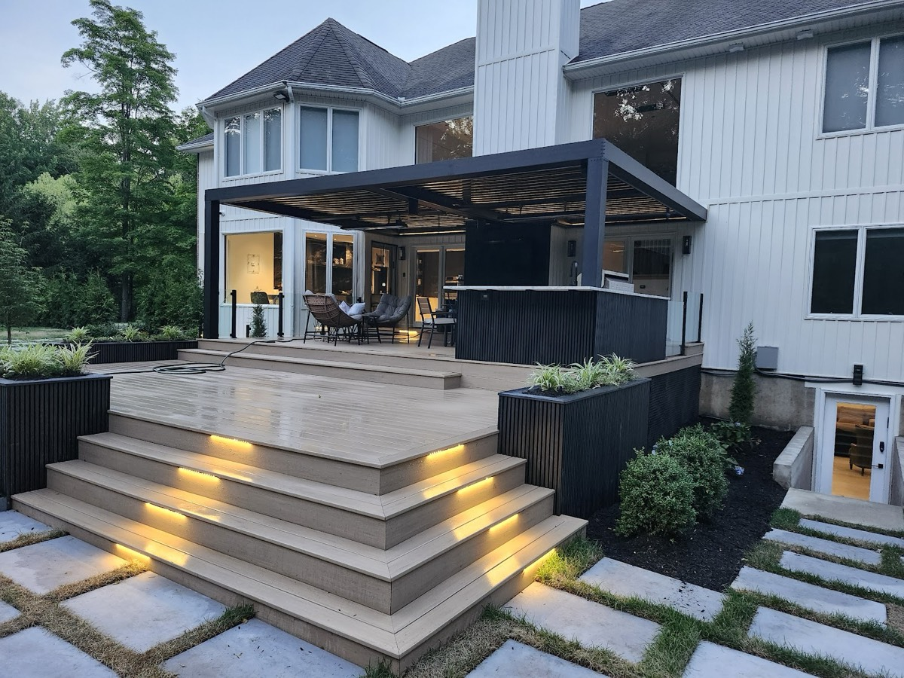
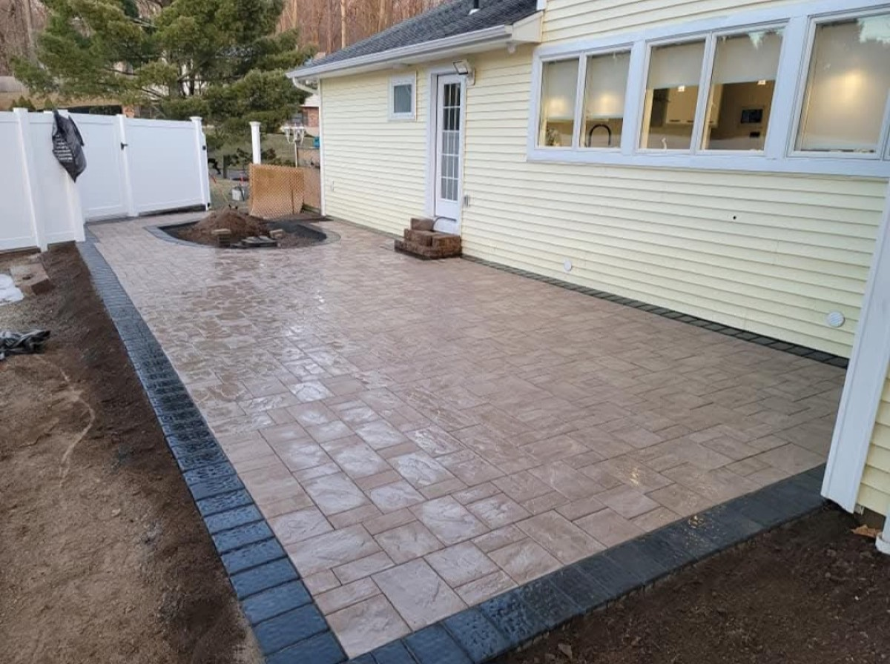
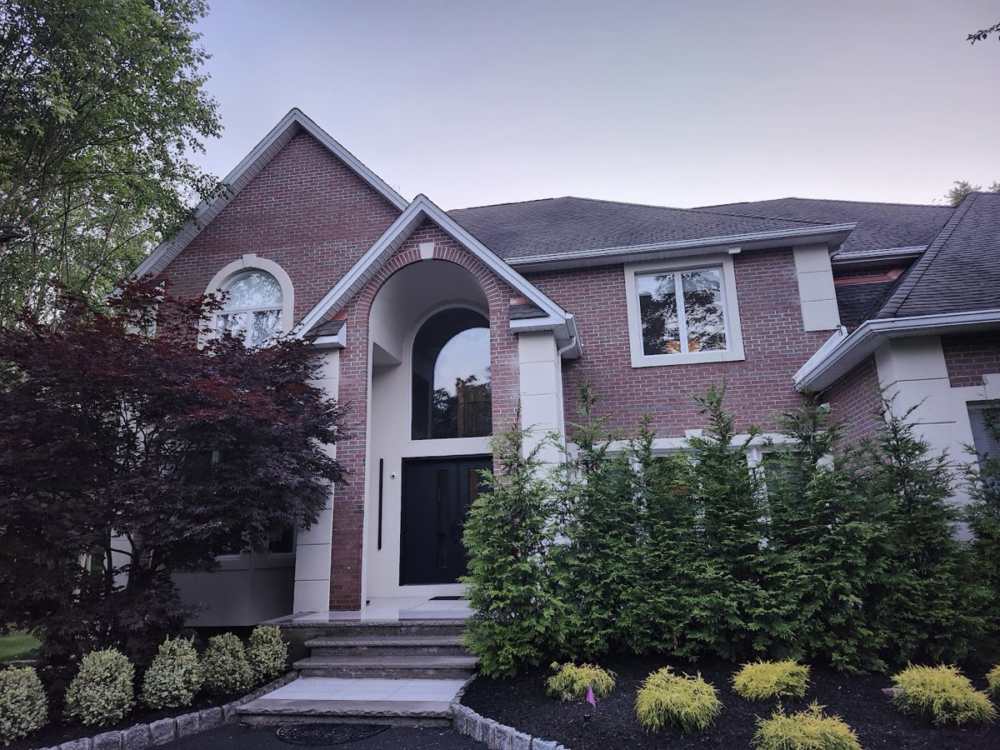
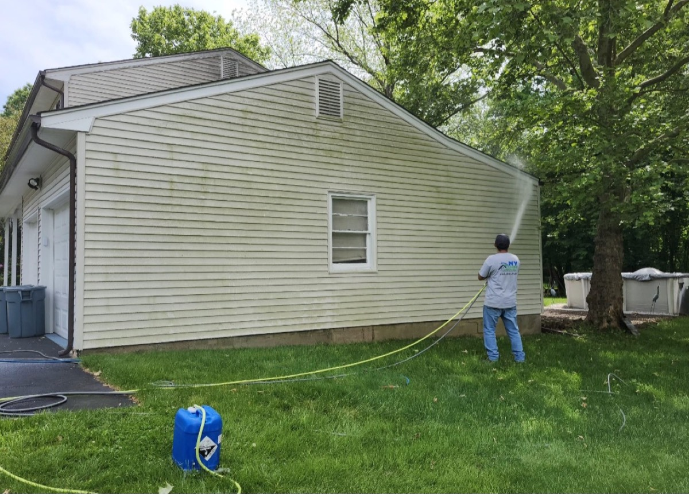

Paver patios
Backyard patios laid in paver with borders.
Patios · Steps · Plantings · Suffern, NY
NY Gardens and Landscaping in Suffern builds paver patios and lit stone steps, plants hedges, and power-washes the house when it's done, going by the photos on their listing.
Services
Services shown in the photos on their Google listing.
Backyard patios laid in paver with borders.
Wide stone steps with lights built into the risers.
Privacy hedges and planted beds along the front of the house.
House siding washed down.
The work
Photos posted to NY Gardens and Landscaping's Google listing.




Hours & contact